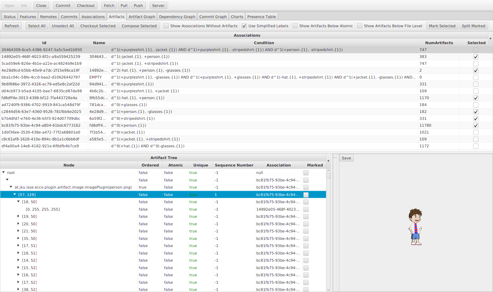
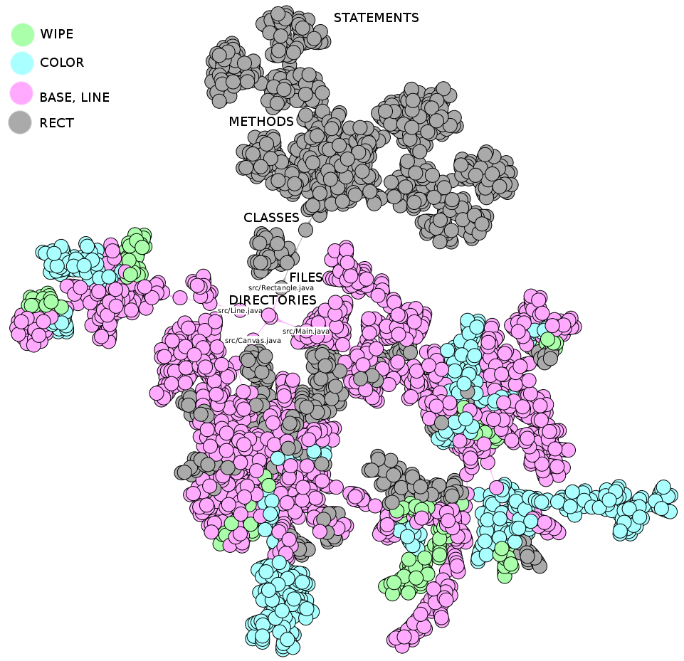

<div id="tool" class="container">

    <div class="thumbnail">
        <div class="caption">
            <h4>Artifacts View</h4>
            <p>The traces and artifacts of the <a href="{{ " showcase#image" | relative_url }}">image example</a>.</p>
        </div>
        <a href="artifacts.png" target="_blank"></a>
    </div>

    <div class="thumbnail mt-5">
        <div class="caption">
            <h4>Artifact Tree</h4>
            <p>The artifact tree of the <a href="{{ " showcase#dpl" | relative_url }}">draw application example</a>.</p>
        </div>
        <a href="artifact_graph_extended.png" target="_blank"></a>
    </div>

</div>
